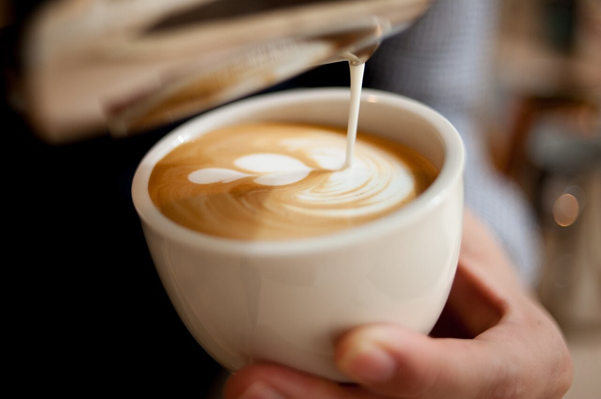
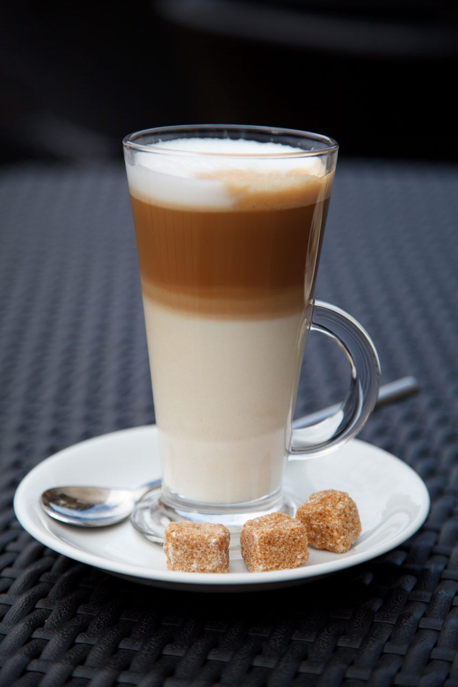

COFFEE STAND / FUKUSHIMA
Calme Coffee
calme(カルム)= フランス語で「穏やかな」
穏やかな時間を過ごして、穏やかな気持ちで帰る。そのための一杯を、福島市南沢又のコーヒースタンドで。
Instagram @calme_coffee
ABOUT
お店のこと
店名の「calme」は、フランス語で「穏やかな」という意味です。店主の安斎遥平さんは、コーヒーを飲んで穏やかな時間を過ごし、穏やかな気持ちで帰れるお店にしたいと話しています(福島経済新聞の開業記事より)。
お店があるのは、福島市南沢又の多機能型事業所「ART SAORI PLUS(アートさをりプラス)」の施設内。毎朝この場所で唱えられる「今日も一日穏やかに」という合言葉に共感し、直感で開店を決めたそうです。
今日も一日穏やかに。
大手コーヒーチェーンでのアルバイトを経て、約2年前から県内のコーヒーイベントに出店。SNSで「店を持つ」と発信し続け、2021年4月1日に実店舗をオープンしました。

MENU
メニュー
確認できた提供内容のみ掲載しています。価格・詳細は準備中です。
浅煎りで酸味とコクがあり、さっぱりした味わい、色味も通常のコーヒーより薄いのが特徴と紹介されています。施設内では雑貨も販売されています。




VOICE
口コミ(イメージ例)
以下は制作側が作成したイメージ例で、実在のお客様の声ではありません。
イメージ例
コーヒーが少し苦手でも、すっと飲めました。飲み終わるころには気持ちがほどけていました。
イメージ例
ひと息つきたいときに立ち寄りたくなる場所です。急がなくていい空気がありました。
イメージ例
甘いものと一緒に、ゆっくりした午後を過ごせました。また行きたいです。